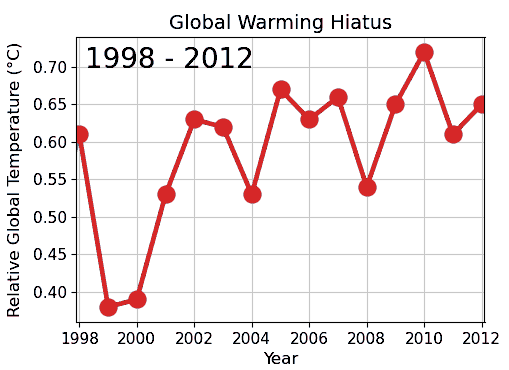
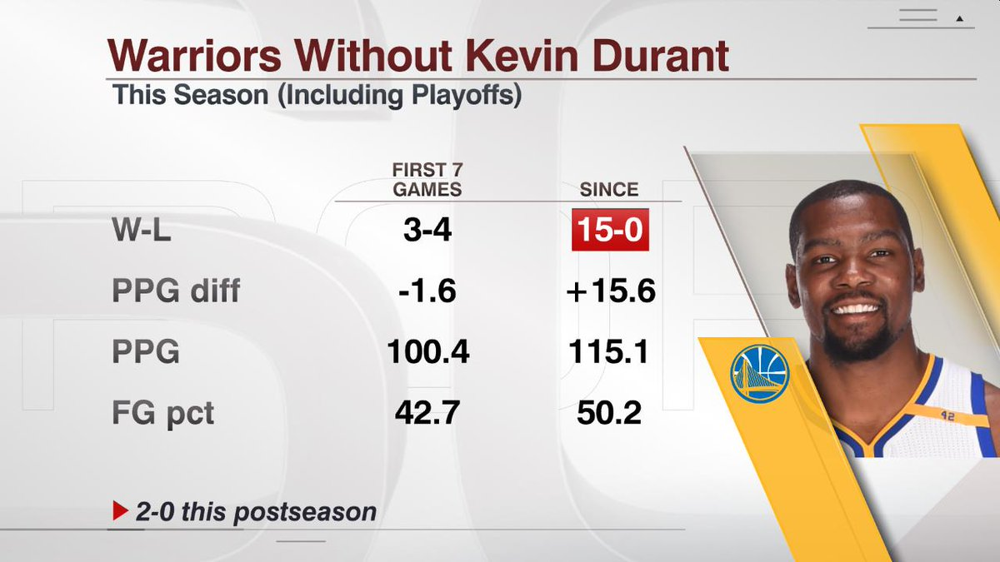

(or “Why 90% of Sports Statistics are Nonsense”)
Linear regression is a great tool for teasing out relationships between variables.
But what about things that change over time?
“Well, my car WAS here just a minute ago…”
This is where using a time series can help us better understand our data.
What is a Time Series?
A time series is a dataset that tracks a measure over time. In general, the purpose of analyzing a time series is two-fold:
- Extracting pattern(s) existing in the data
- Use those pattern(s) to predict or constrain future estimates
Time series pop up everywhere, and as we’ll see below, they can give us a surprising amount of insight into our data.
Government Spending
Let’s use time series to analyze how my hometown (the City of Cincinnati) spends money, using data from their Open Data Portal.
Plotting expenditures by month, we get the following time series:

As expected, monthly expenditures jump up & down on a fairly regular basis. So, what all can we learn from this squiggly line?
Extracting Trends
The real interesting insights from our data appear once we decompose the time series trends (yearly, monthly, etc). Luckily, R makes this easy to do:

There’s a lot here, so let’s discuss each piece individually.
1. Trend
The trend component of our time series answers the question: “what is the general direction this measure moves over time?”
In this case (as in all budgets), the trend is upward.

More interestingly, this trend allows us to see the general ramp-up/draw-downs in city spending over time.
Clearly on display here is the jump in city expenditures as a result of COVID in 2020. What’s also clear is that COVID-level spending habits have no sign of stopping!
2. Seasonal
The seasonal component reflects the recurring patterns that pop up at a specific time each year.
For example, we see spikes at the end of the year for spending. This may correspond to a mandate to have all budgeted $ be spent.

It may be odd to see NEGATIVE dollars associated with some months - the way to read this is that these months have lower expenditures than average (and, months with positive dollars run higher than average).
3. Random
The random component consists of the “rest” of the variation in our time series. By their nature, they are not patterned. But that does not mean they are not useful.

Things that might pop up here would be one-off expenditures (such as a big event). When reviewing a budget, these one-off items can actually provide great discussion points.
Predicting The Next 2 Years
All of these trends can be combined to make a compelling projection of where we expect the City of Cincinnati budget to go in the future.
Here’s our projected monthly trend for the next 2 years:

Our time series analysis allows us to not only better understand the general patterns in city spending, but also craft a solid estimate of future monthly expenditures.
Not bad!
Time Series in Daily Life
One practical lesson of time series that you can take away is:
Choose your start/end points wisely.
As we’ll see below, depending on WHERE we decide to start our analysis, we can end up with completely different conclusions.
Global Warming (Or Is It?)
Over the past 2 centuries, scientists have been keeping meticulous temperature records. Over this time, they noticed a persistent, upward trend in temperature, which they named “Global Warming”.
Grabbing climate data from the NOAA website, we can plot this trend:

However, with careful planning & thought, we can actually cherry-pick a time range that completely contradicts the trend we see in the full dataset.

Courtesy of: Wikipedia
{kind=link}
Within this time range, the upward trend appears to be leveling off. This is the exact same data - we just altered our start/end points, and it totally changed the story.
One concerned author was even more aggressive, picking an 8 year window which showed:
“that for the years 1998-2005 global average temperature did not increase (there was actually a slight decrease, though not at a rate that differs significantly from zero).”
Just by moving the start & end points, this author was able to transform an exponentially increasing trend into a downward trend. Impressive!
Moving the Goal Posts
The tendency to manipulate time ranges to create a narrative is surprisingly common, and nowhere is it more prevalent than in sports broadcasts.
Invariably, the presenter will discuss how some player/team is in a “slump”, and an infographic will pop up like this:

Source: ESPN
If you watch carefully, there’s rarely consistency within the comparisons. Why are we contrasting results from a set of 7 games against the remaining 15 other games?
In reality, many statistics presented in sports broadcasts are set up to maximize the story, rather than being driven by some meaningful time range.
Summing Up
In any dataset, there exist patterns hidden in plain sight. By picking apart all the cycles within the data, time series analysis can provide both insights AND predictive capabilities.
However, time series data can also be tricky - things rarely stay the same forever. By simply picking the wrong time range, we may end up coming to a totally different conclusion.
Whenever a time trend is presented, it pays to be skeptical. In some cases, people will intentionally choose a time range that tells the story they want. And that story may not match the reality.
Next week, we will cover an approach that can help generate more reliable, robust results: nonparametric statistics.
===========================
R code used to generate plots:
- Cincinnati Budget
library(data.table)
library(ggplot2)
library(scales)
library(forecast)
library(lubridate)
set.seed(060124)
### Grab aggregated city exp data from Open Data Portal
cincy_exp <- fread("Cincinnati_Exp_by_Month.csv")
cincy_exp[,RECORD_DATE:=mdy_hms(RECORD_DATE)]
cincy_exp[,RECORD_MONTH:=floor_date(RECORD_DATE, "month")]
cincy_exp[,CAL_MONTH:= month(RECORD_DATE)]
### Break down by month
monthly_exp <- cincy_exp[RECORD_DATE < ymd("2024-06-01") &
RECORD_DATE > ymd("2014-12-31"),
sum(AMOUNT_EXPENDED),by=.(RECORD_MONTH)]
setnames(monthly_exp,"V1", "AMOUNT_EXPENDED")
setorder(monthly_exp, RECORD_MONTH)
### Convert to time series and decompose
ts_data <- ts(monthly_exp[,AMOUNT_EXPENDED], start=c(2014, 7), frequency=12)
ts_trends <- decompose(ts_data)
plot(ts_trends)
### Add trend and random to monthly data, for plotting
monthly_exp[,trend_overall := ts_trends$trend]
monthly_exp[,random_exp := ts_trends$random]
### Create function to plot each series
plot_series <- function(VAR, TITLE, COL){
ggplot(monthly_exp, aes(x=RECORD_MONTH, y=VAR)) +
geom_line(col=COL) +
theme_light() +
theme(axis.title.x=element_blank(),
axis.title.y=element_blank(),
plot.title = element_text(size=18, face="bold", hjust = 0.5)) +
labs(title=TITLE) +
scale_y_continuous(labels = label_dollar()) +
coord_cartesian(ylim=c(monthly_exp[,min(VAR)-10000000],
monthly_exp[,max(VAR)+10000000])) +
geom_text(aes(x = monthly_exp[,max(RECORD_MONTH) - 20000000],
y = monthly_exp[,min(VAR-10000000, na.rm=TRUE)],
label = "Summer of Stats"), col="grey80", size = 3)
}
### Plot Cincinnati Expenditures
plot_series(monthly_exp$AMOUNT_EXPENDED, "City of Cincinnati - Expenditures by Month", "black")
### Plot Overall trend
plot_series(monthly_exp$trend_overall, "Overall Trend", "darkred")
### Plot Random trend
plot_series(monthly_exp$random_exp, "Random Trend", "darkred")
### Establish seasonal trend
trend_seas <- ts_trends$seasonal[1:12] |> as.data.table()
trend_seas[,AMOUNT_EXPENDED:=V1]
trend_seas[,MONTH_NUM:=.I]
### Plot Seasonal trend
ggplot(trend_seas, aes(x=MONTH_NUM, y=AMOUNT_EXPENDED)) +
geom_hline(yintercept=0, col="grey80") +
geom_line(col="darkred") +
theme_light() +
theme(axis.title.x=element_blank(),
axis.title.y=element_blank(),
plot.title = element_text(size=18, face="bold", hjust = 0.5)) +
labs(title="Seasonal Trend") +
scale_y_continuous(labels = label_dollar()) +
scale_x_continuous(breaks = seq_along(month.abb), labels = month.abb) +
coord_cartesian(ylim=c(trend_seas[,min(AMOUNT_EXPENDED)-10000000],
trend_seas[,max(AMOUNT_EXPENDED)+10000000])) +
geom_text(aes(x = trend_seas[,max(MONTH_NUM) - 1],
y = trend_seas[,min(AMOUNT_EXPENDED-10000000)],
label = "Summer of Stats"), col="grey80", size = 3)
### Create time series prediction and plot
ts_arima<-auto.arima(ts_data)
ts_forecast<-forecast(ts_arima, level=c(90), h=2*12)
plot(ts_forecast, main = "City of Cincinnati - Forecasted Expenditures", cex.main=1.5, yaxt="n")
axis(side=2, at=seq(100000000, 240000000, by=50000000), labels=paste0(dollar(seq(100, 240, by=50)),"M"), las=1)
- NOAA Climate Data
library(data.table)
library(ggplot2)
NOAA_data <- fread("NOAA_data.csv")
ggplot(NOAA_data, aes(x=Year, y=Anomaly)) +
geom_line(col="cornflowerblue") +
theme_light() +
theme(axis.title.x=element_blank(),
axis.title.y=element_blank(),
plot.title = element_text(size=18, face="bold", hjust = 0.5)) +
labs(title="Global Temperature Anomaly") +
geom_text(aes(x = NOAA_data[,max(Year) - 8],
y = NOAA_data[,min(Anomaly, na.rm=TRUE)],
label = "Summer of Stats"), col="grey80", size = 3)